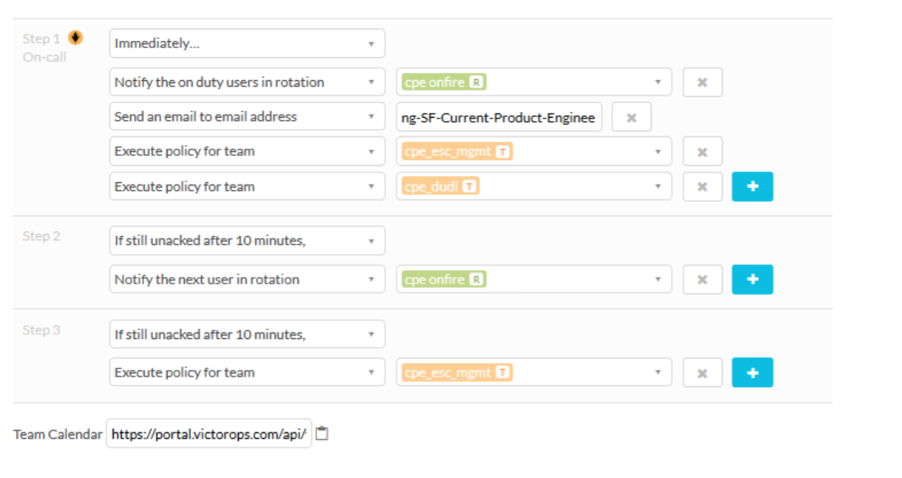
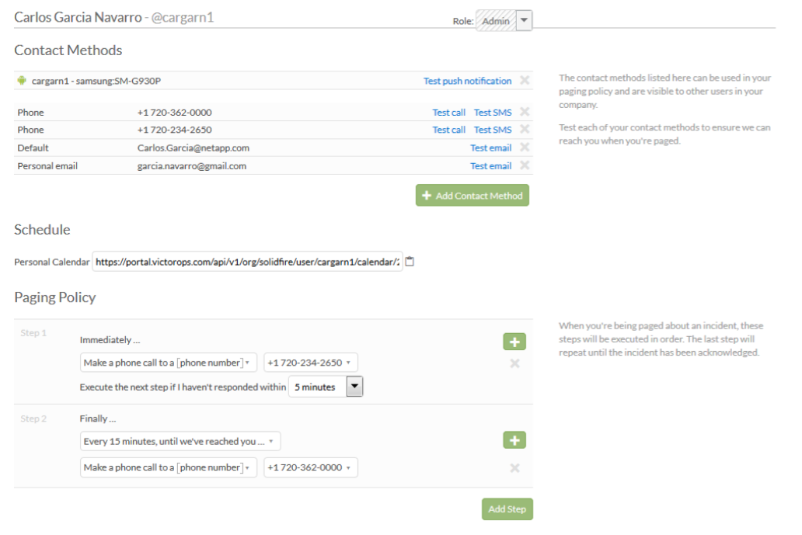

On-Call¶
CPE uses VictorOps as the tool to manage team rotations and personal paging policies. To access VictorOps, use this link:
https://portal.victorops.com/client/solidfire
When a “CPE DU/DL/DC” ticket is created in JIRA, if the “call-out” checkbox is checked, VictorOps will trigger the escalation policy defined for the cpe_on_fire team.
..image:: onCall1.png
This includes contacting the primary on-call person for the CPE team, the on-call manager and sending an email to the whole team. If the alert is not acknowledged within 10 minutes, then the secondary on-call person will be contacted. If the alert isn’t acknowledged within 10 minutes after reaching out to the secondary on-call person, then the on-call escalation manager will be contacted (again). The following picture shows the team policy as entered in VictorOps:
Export on-call calenders to from VictorOps and import to Outlook or Google¶
There are two on-call calenders in VictorOps; one for Engineer on-call (cpe-on-fire) and one for Manager on-call (cpe-esc-mgmt). You need to add both calendars to Outlook or Google.
To export a calendar from VictorOps, click the link below and save the ‘.ics’ file.
cpe-on-fire: https://portal.victorops.com/api/v1/org/solidfire/team/cpe_on_fire/calendar/C6DB2F688AAB498D9E812EADAF3C5924.ics
cpe-esc-mgmt: https://portal.victorops.com/api/v1/org/solidfire/team/cpe_esc_mgmt/calendar/8C6A4B0F1D741F8F795BBCE855F030C3.ics
To import the calendar to Google or Outlook, add a calendar from file and select the appropriate ‘.ics’ file.
Enter Personal Paging Policy¶

- If you’re part of the rotation team you should enter your contact information and your paging policy which describes how VictorOps should contact you if needed. You can do this in: VictorOps -> Settings -> Users -> Edit your user .
If you Are on Call¶
- If you’re part of the rotation policy you’ll be on-call eventually. To find out when you’ll be on-call you can check the VictorOps team calendar, which can be found in VictorOps -> Settings -> Teams -> Select team cpe_on_fire.
- You can also copy the Team Calendar and add it to your Outlook or Google Calendars, e.g.